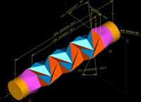
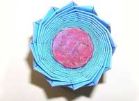
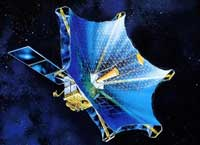

|
THE SCIENCE OF ORIGAMI
Art of Paper Folding Applied to Engineering
(March 12, 2008)
|
|
Origami is the traditional Japanese art of paper folding. With just one sheet of paper, you can make all kinds of objects, such as cranes, rabbits, turtles, and airplanes. Origami made using colored paper can be especially beautiful, and while many people may associate origami with child's play, it has become popular as a hobby for adults in recent years. At the Junkudo Shoten bookstore in Tokyo's Ikebukuro district, for example, there is an "origami for adults" corner where paper-folding patterns aimed at grown-up enthusiasts are displayed. But the possibilities of origami do not end there. There is now research on applying paper-folding techniques to engineering in a field dubbed "origami engineering."

A plan of an origami engineering design conceived by Dr. Nojima Taketoshi. (Photo courtesy of Professor Hagiwara Ichiro) Applications of Origami Engineering One example of origami engineering can be found in aluminum cans that have geometric indentations on the surface, giving the light cans a strong structure. Another is the spiraled sides of some plastic bottles, which make them easy to crush after use. There are also maps that are folded up tightly to make them small enough for people to carry and can be unfolded simply by holding both ends and pulling. These differing functions are all applications of origami techniques.

(Photo courtesy of Dr. Nojima Taketoshi) The most famous example is the Miura-ori, which has been considered as a method for folding up the antennas of satellites before they are launched. This technique, which was conceived by University of Tokyo Professor Emeritus Miura Koryo, allows an antenna to be unfolded simply by pulling on opposite diagonal corners. The antenna can be collapsed again simply by pushing on the opposite diagonal corners. Usually, complicated procedures are required when a machine is folded in fourths or eighths. With an origami-inspired folding method, however, it can be made extremely simple. Professor Miura did not come up with this design while folding paper, however. The phenomenon he made use of is known as "buckling," which describes the compression of a cylinder when pressure is applied. When he was creating a formula for buckling, he noticed the crinkles that appeared on the surface of an elliptical cylinder. Using this discovery, he mathematically proved the existence of a structure enabling a surface to be folded up into a point.

An illustration of a satellite antenna folded using the Miura-ori technique. (C)JAXA The Possibilities of Origami Engineering In the future, origami structural modeling is expected to be applied in such fields as collision safety engineering, interior noise control, and heat shielding. Buildings, car bodies, and furniture are among the objects likely to feature origami-inspired structures as this field develops. Origami structures can be found in nature, as well, such as in the growth process of plant leaves and in the wings of insects prior to eclosion. There are undoubtedly sophisticated structures that scientists have yet to discover. It is the hope of researchers going forward that the perspective of origami can be used to find and apply some of these. |
){kind=link}
){kind=link}
){kind=link}
Copyright (C)2008 Web Japan. Edited by Japan Echo Inc. based on domestic Japanese news sources. Articles presented here are offered for reference purposes and do not necessarily represent the policy or views of the Japanese Government.